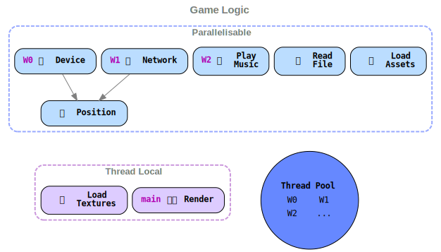
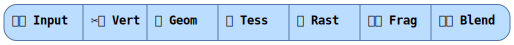

Introduction
Adding WASM support to an existing native application is unchartered waters for many projects.
This talk covers the conceptual differences between native and WASM application execution, and illustrates the problems encountered and how they were solved.
It does not provide exact detail on the code changes that were made. That detail will be provided in a wasm_rush_report book that will be released within the next week.
This is also not a talk on how WASM works or how to write WASM, but Utah Rust published their WASM introduction videos which cover this.
Written for the Rust Auckland meetup 2020-05-04.
- Rust Auckland meetup: https://www.meetup.com/rust-akl/
- Slack: https://rust-akl.slack.com/messages/CCC7KUXMY/
- Repository: https://github.com/azriel91/wasm_it
Feel free to use and improve on these.
Vision
Given a native application, make it work in the browser:
{kind=link}
{kind=link}
WASM
What is WASM
"Very very fast JavaScript"
Web assembly is low level bytecode that runs in the browser. For more detail, visit the Web Assembly website, and watch the WASM introduction videos from the Utah Rust meetup.
Why WASM
- Cross-platform – cross OS, device.
- Sandboxed environment (security – file system, memory).
- Many programming languages compile to WASM.
- Many other use cases.
Runtime Environment
There are some differences between native and browser environments.
| Item | Native | Browser / WASM |
|---|---|---|
| Access to shared libraries | ✅ | ❌ |
| Access to file system | ✅ | ❌ |
| Memory | unlimited | 4 GB1 |
| Networking | Any TCP, UDP | XHR, Web Sockets, QUIC |
| Threading | OS threads | Web Workers |
Notes:
1 2 GB on Chrome – V8 JS implementation specific limit.
Subject Areas
Amethyst: Data-driven game engine written in Rust
As a native game engine library, functionality provided by Amethyst span the following subject areas:
- Event loop
- Multithreading
- Configuration
- Rendering
- Audio
- Networking
The pages in this section cover the conceptual differences at runtime, that are relevant to decisions made at development time.
Event Loop
Takeaways:
- An event loop is a loop that polls for an event.
- When an event is received, some code is run. The code is the
event_handler. - The application provides the
event_handler. - Native: The application controls the event loop –
winit. - WASM: The browser controls the event loop, but consistent API is still exposed by
winit.
Event loop example
winit:
// Not real code
impl EventLoop {
pub fn run<F>(self, event_handler: F) -> !
where
F: ..
{
loop {
let event = poll_event(); // Blocks until an event arrives.
event_handler(event, ..);
}
}
}
amethyst:
// Not real code, but close 🤏.
let event_handler = move |event, _, control_flow| {
match event {
// tick the game
Event::MainEventsCleared => self.run_game_logic(),
// input
Event::DeviceEvent(device_event) => self.notify_input(device_event),
_ => {},
}
};
event_loop.run(event_handler);
// Never reached, as EventLoop::run(_) returns `!`.
loop {
let event = poll_event(); // Blocks until an event arrives.
event_handler(event, ..);
}
Native
In a native application, the event loop receives events from the operating system.
WASM
In a browser, the event loop is not controlled by winit, but the browser.
To surrender control to the browser, winit sends the event handler to the browser, and panics.
The Window::requestAnimationFrame API is used to receive events.
Javascript callback example
// While `pixel_shift`` is less than 100, call `requestAnimationFrame`.
var pixel_shift = 0;
function move(_timestamp) {
element.style.transform = 'translateX(' + pixel_shift + 'px)';
if (pixel_shift < 100) {
pixel_shift += 1;
window.requestAnimationFrame(move);
}
}
window.requestAnimationFrame(move);
To ensure requestAnimationFrame is called, in the event handler, the control_flow parameter must be set to ControlFlow::Poll.
let event_handler = move |event, _, control_flow| {
// ..
// Ensure the browser calls `requestAnimationFrame`
// This will ensure this event handler is run, even if no events arrive.
*control_flow = ControlFlow::Poll;
};
event_loop.run(event_handler);
Multithreading
Takeaways:
- Performance can be achieved by parallelizing tasks.
- Native: Tasks submitted to the thread pool are executed immediately[citation needed].
- WASM: Tasks submitted to the thread pool are executed when control returns to the browser.
- WASM: Since tasks will never run until the main thread returns, the main thread cannot wait for tasks to complete.
- Github issue(s): amethyst#2191
Amethyst uses rayon to manage a thread pool, and parallel processing is achieved by submitting tasks to that pool.
Dispatcher

Native
In native applications, parallel execution is enabled by default.
When tasks are submitted to the thread pool, they are executed immediately.
Parallel execution control flow
sequenceDiagram
participant main
participant #nbsp;
participant W0
participant W1
participant W2
main ->>+ #nbsp;: dispatch_par()
rect rgba(0, 100, 255, .2)
#nbsp; -->>+ W2: 🎶 Play Music#nbsp;#nbsp;#nbsp;#nbsp;#nbsp;#nbsp;#nbsp;#nbsp;#nbsp;#nbsp;#nbsp;#nbsp;#nbsp;#nbsp;#nbsp;#nbsp;#nbsp;#nbsp;#nbsp;#nbsp;#nbsp;#nbsp;#nbsp;#nbsp;#nbsp;#nbsp;#nbsp;#nbsp;#nbsp;#nbsp;#nbsp;#nbsp;#nbsp;#nbsp;#nbsp;#nbsp;#nbsp;#nbsp;#nbsp;#nbsp;
#nbsp; -->>+ W0: 🎮 Device#nbsp;#nbsp;#nbsp;#nbsp;
#nbsp; -->>+ W1: 🌐 Network #nbsp;#nbsp;#nbsp;#nbsp;#nbsp;#nbsp;#nbsp;#nbsp;#nbsp;#nbsp;#nbsp;#nbsp;#nbsp;#nbsp;#nbsp;#nbsp;#nbsp;#nbsp;#nbsp;#nbsp;#nbsp;#nbsp;
W0 -->>- #nbsp;: #nbsp;
W1 -->>- #nbsp;: #nbsp;
W2 -->>- #nbsp;: #nbsp;
#nbsp; -->>+ W2: 📦 Load Assets#nbsp;#nbsp;#nbsp;#nbsp;#nbsp;#nbsp;#nbsp;#nbsp;#nbsp;#nbsp;#nbsp;#nbsp;#nbsp;#nbsp;#nbsp;#nbsp;#nbsp;#nbsp;#nbsp;#nbsp;#nbsp;#nbsp;#nbsp;#nbsp;#nbsp;#nbsp;#nbsp;#nbsp;#nbsp;#nbsp;#nbsp;#nbsp;#nbsp;#nbsp;#nbsp;#nbsp;#nbsp;#nbsp;#nbsp;#nbsp;
Note left of W2: 📦 Task
#nbsp; -->>+ W1: 📄 Read File#nbsp;#nbsp;#nbsp;#nbsp;#nbsp;#nbsp;#nbsp;#nbsp;#nbsp;#nbsp;#nbsp;#nbsp;#nbsp;#nbsp;#nbsp;#nbsp;#nbsp;#nbsp;#nbsp;#nbsp;#nbsp;#nbsp;
W2 -->>- #nbsp;: #nbsp;
W1 -->>- #nbsp;: #nbsp;
#nbsp; -->>+ W0: 📡 Position#nbsp;#nbsp;#nbsp;
W0 -->>- #nbsp;: #nbsp;
W1 -->+ W1: 📦 Asset Load Task
end
#nbsp; ->>- main: #nbsp;
%% Asset Load Task end
W1 -->- W1: #nbsp;
main ->>+ #nbsp;: dispatch_thread_local()
rect rgba(180, 0, 220, .2)
#nbsp; -->>+ main: 🖌️ Render
main -->>- #nbsp;: #nbsp;
#nbsp; -->>+ main: 🎨 Load Textures
main -->>- #nbsp;: #nbsp;
end
#nbsp; ->>- main: #nbsp;
WASM
When adding WASM support, sequential execution is used.
If we tried to use parallel execution, tasks that are submitted to the thread pool are queued. They will only run when control has been returned to the browser, as the browser will only send the tasks (as messages) to each web worker when it has control. This is a problem because the main thread would be waiting for all the tasks to complete, when in fact nothing is running.
Sequential execution control flow
sequenceDiagram
participant main
participant #nbsp;
participant W0;
participant W1;
participant W2;
main ->>+ #nbsp;: dispatch_seq()
rect rgba(0, 100, 255, .2)
#nbsp; -->>+ main: 🎮 Device
main -->>- #nbsp;: #nbsp;
#nbsp; -->>+ main: 🌐 Network
main -->>- #nbsp;: #nbsp;
#nbsp; -->>+ main: 📦 Load Assets
Note left of #nbsp;: 📦 Task
main -->>- #nbsp;: #nbsp;
#nbsp; -->>+ main: 📄 Read File
main -->>- #nbsp;: #nbsp;
#nbsp; -->>+ main: 📡 Position
main -->>- #nbsp;: #nbsp;
#nbsp; -->>+ main: 🎶 Play Music
main -->>- #nbsp;: #nbsp;
end
#nbsp; ->>- main: #nbsp;
main ->>+ #nbsp;: dispatch_thread_local()
rect rgba(180, 0, 220, .2)
#nbsp; -->>+ main: 🖌️ Render
main -->>- #nbsp;: #nbsp;
#nbsp; -->>+ main: 🎨 Load Textures
main -->>- #nbsp;: #nbsp;
end
#nbsp; ->>- main: #nbsp;
W0 -->+ W0: 📦 Asset Load Task
%% Asset Load Task end
W0 -->- W0: #nbsp;
Configuration
Takeaways:
- Native: Configuration is read from environment variables, command line, and the file system.
- WASM: Configuration has to be loaded externally – query parameters, HTML form, XHR.
- Github issue(s): amethyst#2180, amethyst#2214
Native
Native applications read from several kinds of configuration:
Command line arguments: Online play server address
cargo run --bin will --release -- --session_server_address 127.0.0.1
Configuration files: Input settings, log levels
--- logger.yaml
stdout: "Colored" # "Off", "Plain", "Colored"
level_filter: "debug"
module_levels:
- ["amethyst", "warn"]
- ["net_play", "info"]
- ["session_server", "info"]
Assets: UI configuration, images – sprite sheets

WASM
WASM applications don't have access to those forms of input, but can use others:
Query Parameters:
http://localhost:8000/?session_server_address=127.0.0.1
Forms:

On the application's web page: Within the application: See Simulated file system accesses using XHRs: See XML HTTP Requests:
let logger_config = await fetch('app/will/logger.yaml')
.then((response) => { return response.text(); });
wasm_bindgen.WillAppBuilder
.new()
.with_logger_config(logger_config)
.run();
let xhr = XmlHttpRequest::new()?;
xhr.open_with_async("GET", path_str, false)?;
xhr.send()?;
let response = xhr.response()?;
HttpSource.#[cfg(not(target_arch = "wasm32"))]
let background_definition_path_exists = background_definition_path.exists();
#[cfg(target_arch = "wasm32")]
let background_definition_path_exists =
background_definition_path.exists_on_server();
PathAccessExt – caches file.exists() values from the server.
Rendering
Takeaways:
- The output variables of one shader are used as the input variables to the next shader.
- Native: The types of the variables passed from one shader to the next shader need to match.
- WASM: The names and types of the variables passed from one shader to the next shader need to match.
- Github issue(s): amethyst#2192, amethyst#2205, amethyst#2247
In Amethyst, rendering is done with a standard graphics pipeline. Shaders are little programs along the pipeline that transform data to be drawn on screen.

A shader looks like this:
#version 450
// some details removed
// input parameters
in vec2 var_in_0;
in vec2 var_in_1;
// output parameters
out vec2 var_0;
out vec4 var_1;
void main() {
// code
}
Native
The types of the output variables from one shader need to match the types of the input variables of the next shader:
-
✂️ Vertex shader
out vec2 tex_coords; out vec4 color; -
🖍️ Fragment shader
// Variable types match up. in vec2 in_tex_coords; in vec4 in_color;
WASM
The names and types of the output variables from one shader need to match the names and types of the input variables of the next shader:
-
✂️ Vertex shader
out vec2 vert_out_tex_coords; out vec4 vert_out_color; -
🖍️ Fragment shader
// Variable names and types match up. in vec2 vert_out_tex_coords; in vec4 vert_out_color;
Audio
Takeaways:
- Any memory accessed by Web Workers is in the
SharedArrayBuffer. AudioBuffer::copyToChannelmust be given owned memory.- Cloning the memory – whether in Rust or JS – then calling
audio_buffer.copy_to_channelin Rust still goes through aSharedArrayBuffer. - Workaround: pass both the
AudioBufferand the bytes to JS, clone the memory, then callaudioBuffer.copyToChannelin JS. - WASM: The user needs to interact with the page for audio to play.
- Github issue(s): amethyst#2195
Native
- 🎵 You want to play music.
- 🎶 You send music to the audio buffer.
- 🔊 Music plays.
WASM
-
🎵 You want to play music.
-
📜 You change your build script so
Workers can be initialized without a browserAudioContext.// Before const lAudioContext = ( typeof AudioContext !== 'undefined' ? AudioContext : webkitAudioContext ); // After const lAudioContext = ( typeof AudioContext !== 'undefined' ? AudioContext : typeof webkitAudioContext !== 'undefined' ? webkitAudioContext : null ); -
📨 You send the
AudioBufferand the audio byte array (accessed throughSharedArrayBuffer) to JS.#[wasm_bindgen] extern "C" { fn copy_audio_buffer(dest: &AudioBuffer, src: &[f32], channel: i32); } -
📋 You clone the data.
There are 5 ways to "copy" data. Only one truely clones:
function make_standalone(src) { // These don't clone the data. var standalone = Float32Array.from(src); var standalone = new Float32Array(src); var standalone = src.slice(); var standalone = ArrayBuffer.transfer(src); // This one does. var standalone = [...src]; return standalone; } -
🎶 You send music to the audio buffer.
function copy_audio_buffer(dest, src, channel) { // Turn the array view into owned memory. var standalone = [...src]; // Make it a Float32Array. var buffer = new Float32Array(standalone); // Copy the data. dest.copyToChannel(buffer, channel); } -
🔇 Nothing plays, because you need a user interaction.
-
🖱️ You make the user click the canvas.
-
🔊 Music plays.. ..when the main thread returns.
Networking
Takeaways:
- Native: Arbitrary TCP, UDP connections can be made.
- Native: Can communicate using the
WebSocketprotocol. - WASM: Need to obey browser security rules.
- WASM: Can communicate using
WebSockets. - WASM: Receiving messages is done through callbacks, and requires a lot of wiring to pass the message back to Rust.
- Github issue(s): amethyst#2251
Native
Sending Messages
- 🌐 You want to play online.
- 🔌 You open a connection.
- 📡 You send data.
Receiving Messages
- Check for messages received by the network socket.
- Iterate and decide what to do with them.
WASM
Note: If you retain the TCP / UDP code, the WASM application doesn't crash, but simply logs that this part is not implemented.
Sending Messages
-
🌐 You want to play online.
-
📨 You send the
WebSocketand the message byte array (accessed throughSharedArrayBuffer) to JS.#[wasm_bindgen] extern "C" { fn web_socket_send(web_socket: &WebSocket, src: &[u8]); } -
📋 You clone the data.
-
💽 You send data to the web socket.
function web_socket_send(web_socket, src) { // Turn the array view into owned memory. var standalone = [...src]; // Make it a Uint8Array. let bytes = new Uint8Array(standalone); web_socket.send(bytes); } -
📮 The message is sent when the main thread returns.
Receiving Messages
- When creating the web socket, set up an
onmessagecallback. - In the
onmessagecallback, use a [FileReader] to begin to read the bytes from the socket. - Also, set up an
onloadcallback for when theFileReaderhas finished reading bytes. - In the
onloadcallback, send the message through to Rust using achannel. - In Rust, read from the channel for any messages.
Demo
Left: vision, Right: actual
{kind=link}
It's very nice when something turns out to be how it was envisioned in the first place.
Live
-
Run both native and web versions
cd autexousious # https://github.com/azriel91/autexousious # native cargo run --bin will --release -- --session_server_address 127.0.0.1 # web ./scripts/build_wasm.sh simple-http-server -i --nocache -
For online play, run the session server:
cargo run --bin session_server --release -- --address 127.0.0.1 -
Open http://localhost:8000 in Chrome.
Video
Worth Mentioning
Track your progress with an end-to-end project.
Having an end-to-end project that uses the project you are developing helps you discover and prioritize issues.
Initially we began with Pong, then we became more ambitious:
Week 1: Compile
$ wasm-pack build -- --features "wasm gl"
# ..
[INFO]: :-) Done in 37.87s
[INFO]: :-) Your wasm pkg is ready to publish at ./pkg.
Week 2: Runs 1 frame

Week 3: It moves

Week 4: Audio
Forget what you know about programming for a moment
In the following sequence canvas.width() is a getter. Where is canvas.set_attribute("width", 640) called?
- A
canvas.width()-> 800- B
canvas.width()-> 800- C
canvas.width()-> 640- D
Answer
B. See amethyst#2247 (comment)
canvas.width()-> 800canvas.set_attribute("width", 640);canvas.width()-> 800- Do who-knows-what with Gpu Device and contexts
canvas.width()-> 640
There will be a project report written in the next week
This will cover:
- How the project was managed.
- Project implementation timeline.
- Links to forks, issues, and PRs that made it back to upstream repositories.
- Future work.